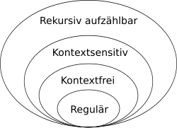
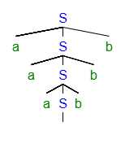
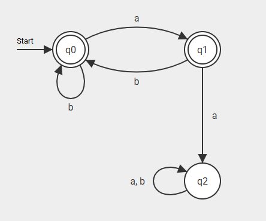
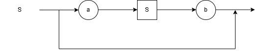

- Left/Right Arrow Key - Move Slides
- Up/Down Arrow Key - Extra Slides
- O - Overview
- Alphabet: Menge an Zeichen
- Wort: Endliche Zeichenfolge aus einem Alphabet
- Leeres Wort: ε (|ε| = 0)
- (Formale) Sprache: Menge an Wörtern über ein Alphabet
Was ist eine Grammatik?
- Regeln zu Bildung von formalen Wörtern (damit auch Sprachen)
- Ähnlich zu Sätzen bei natürlichen Sprachen
- Ersetzungsregeln
- SATZ -> SUBJEKT PRAEDIKAT OBJEKT.
- SUBJEKT -> PRONOM | NAME
- PRONOM -> Ich | Du | Er | Sie | Es | Wir | Ihr
Formale Bestandteile
- Menge an Nichtterminalsymbolen N = { S, A, B }
- Menge an Terminalsymbolen T = { a, b, c } (Alphabet)
- Menge an Produktionsregeln P
- Startsymbol S ∈ N
Produktionsregeln
α -> β
- α mindestens ein Nichtterminalsymbol
- α und β beliebig viele Zeichen aus N und/oder T
- Oder-Zusammenfassung:
α -> β
α -> γ
<=>
α -> β | γ
Chomsky Hierarchie
Einschränkungen für die Produktionsregeln

Typ 0 - Unbeschränkte Grammatiken
- Beliebige Grammatiken
- Rekursiv aufzählbare Sprachen
- Turingmaschine (semi-entscheidbar)
Typ 1 - Kontextsensitive Grammatiken
- |α| <= |β|
- S -> ε
- Wort wird während der Produktion nicht kürzer
- Entscheidbar, ob Wort sich durch Grammatik erzeugen lässt
{ anbncn | n >= 0 }
- S -> S' | ε
- S' -> aS'Bc | abc
- cB -> Bc
- bB -> bb
aabbcc ∈ { anbncn | n >= 0 }
- S -> S'
- S' -> aS'Bc
- aS'Bc -> aabcBc (S' -> abc)
- aabcBc -> aabBcc (cB -> Bc)
- aabBcc -> aabbcc (bB -> bb)
Typ 2 - Kontextfreie Grammatiken
- α besteht aus genau einem Nichtterminalsymbol
bB -> bb- β darf immer ε sein
- Pumping-Lemma (Beweise einer nicht-kontextfreien Sprache)
- "Frei" vom Kontext - Ableitung unabhängig von anderen Symbolen
- Programmiersprachen - Backus-Naur-Form
- Syntax-/Ableitungsbaum
aaabbb ∈ { anbn | n >= 0 }
- S -> aSb
- aSb -> aaSbb
- aaSbb -> aaaSbbb
- aaaSbbb -> aaabbb (S -> ε)
aaabbb ∈ { anbn | n >= 0 }

{ vvR | v ∈ Σ* }
- S -> aSa | bSb | a | b | ε
ababa
- S -> aSa
- aSa -> abSba (S -> bSb)
- abSba -> ababa (S -> a)
Typ 3 - Reguläre Grammatiken
- β maximal ein Nichtterminalsymbol
- Nichtterminalsymbol in β immer ganz rechts (rechtsregulär)
- Linksregulär und rechtsregulär (nicht mischen)
- Schrittweiser Aufbau von Wörtern in eine Richtung
- erweiterte/streng reguläre Grammatiken: β maximal ein Terminalsymbol
- gleichmächtig
- Endlicher Automat, Reguläre Ausdrücke
{ w | |w| <= 2 }
- S -> ε | a | b | aa | ab | bb | ba
- S -> ε | a | b | aT | bT
- T -> a | b
- S -> ε | bS | aT
- T -> ε | bS

Backus-Naur-Form
- Darstellung kontextfreier Grammatiken
- Syntax vieler höherer Programmiersprachen, Befehlssätze o. ä.
- Konzept kontextfreier Grammatiken, andere Darstellung
- Syntaxdiagramm
S -> aSb | ε
<S> ::= "a"<S>"b" |

- S -> N ::= L
- L -> N | W | 'L | L' | ε
- N -> '<W>'
- W -> BW | ε
- B -> a-z | A-Z | ...